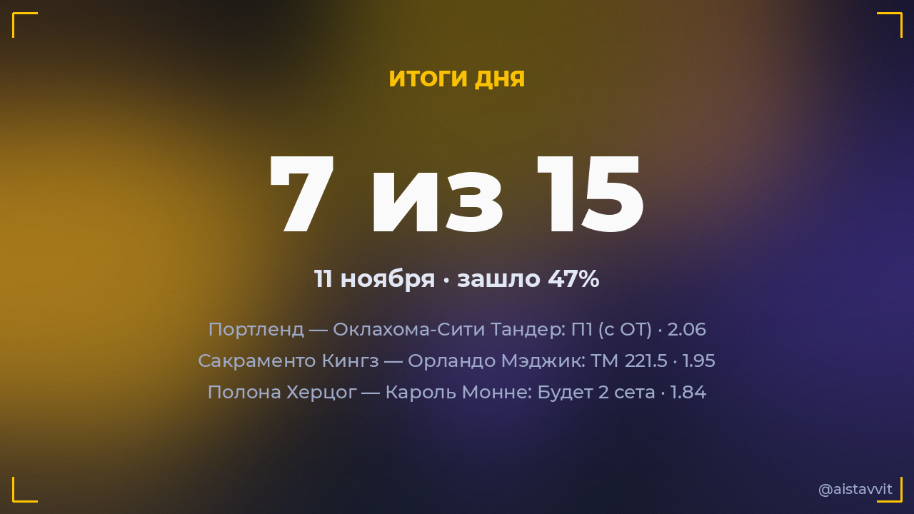

Итоги дня — 11 ноября 2026
Зашло 7 из 15 основных прогнозов (47%), ROI дня -13.6%. Каждый прогноз учтён — и заходы, и промахи.

Все прогнозы дня
🏀 Сакраменто Кингз — Орландо Мэджик
ТМ 221.5 · 1.95100:107 ✅
ТМ 221.5 · 1.95100:107 ✅
🏀 Портленд — Оклахома-Сити Тандер
П1 (с ОТ) · 2.06123:103 ✅
П1 (с ОТ) · 2.06123:103 ✅
🎾 Полона Херцог — Кароль Монне
Будет 2 сета · 1.842:0 ✅
Будет 2 сета · 1.842:0 ✅
🎾 Татьяна Мария — Алис Тюбелло
Будет 2 сета · 1.840:2 ✅
Будет 2 сета · 1.840:2 ✅
🎾 Тейлор Фриц — Кэмерон Норри
Будет 2 сета · 1.642:0 ✅
Будет 2 сета · 1.642:0 ✅
🎾 Лючия Бронцетти — Элизабет Мандлик
Будет 2 сета · 1.830:2 ✅
Будет 2 сета · 1.830:2 ✅
🎾 Мария Лурдес Карле — Марина Бассольс Рибера
Будет 2 сета · 1.800:2 ✅
Будет 2 сета · 1.800:2 ✅
🏒 Лос-Анджелес — Нэшвилл
ТБ 6.5 · 2.050:3 ❌
ТБ 6.5 · 2.050:3 ❌
⚽ Сборная Вьетнама — Сборная Тайваня
ТБ 3.5 · 1.692:0 ❌
ТБ 3.5 · 1.692:0 ❌
🎾 Лоренцо Сонего — Алехандро Табило
Будет 2 сета · 1.801:2 ❌
Будет 2 сета · 1.801:2 ❌
🎾 Андреа Лазаро Гарсиа — Хасмин Ортенси
Будет 2 сета · 1.852:1 ❌
Будет 2 сета · 1.852:1 ❌
🎾 Александр Шевченко — Каспер Рууд
Будет 2 сета · 1.592:1 ❌
Будет 2 сета · 1.592:1 ❌
🎾 Ирен Бурильо — Юлия Грабер
Победа: Юлия Грабер · 1.532:0 ❌
Победа: Юлия Грабер · 1.532:0 ❌
🎾 Миомир Кецманович — Хольгер Руне
Будет 2 сета · 1.741:2 ❌
Будет 2 сета · 1.741:2 ❌
🎾 Элина Свитолина — Каролина Мухова
Будет 2 сета · 1.832:1 ❌
Будет 2 сета · 1.832:1 ❌
← предыдущий день · статистика бота · прогнозы на сегодня · Telegram-канал